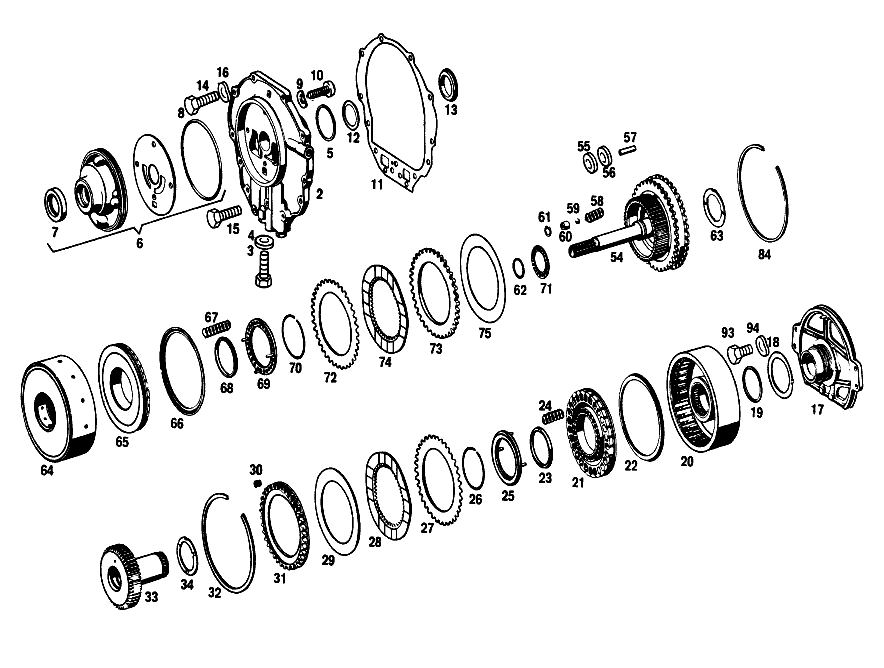

| № | Артикул | Название | Кол. | Примечание | Ограничение |
|---|---|---|---|---|---|
| 1 | A 111 270 13 01 | АКП | 1 | [001] СПЕЦ.ПОЖЕЛАНИЕ [002] IN CASE OF O.R.H.,RANGE OF DELIVERY INCLUDES:1 AUXILIARY LEVER 112 270 06 56 [697] ДЕТАЛЬ ПОСТАВЛЯЕТСЯ ТОЛЬКО/ИЛИ ТАКЖЕ КАК ЗАП.ЧАСТЬ | |
| 2 | A 112 270 05 05 | - КРЫШКА | - | ||
| 2 | A 112 270 07 05 | - КРЫШКА | 1 | ||
| 3 | A 112 997 05 30 | - ЗАГЛУШКА РЕЗЬБОВАЯ | 2 | ||
| 3 | A 112 997 05 30 | - ЗАГЛУШКА РЕЗЬБОВАЯ | 1 | ||
| 4 | N 007603 010100 | - Уплотнительное кольцо | 2 | 10X13.5 AL | |
| 4 | N 007603 010100 | - Уплотнительное кольцо | 1 | 10X13.5 AL | |
| 5 | A 100 272 01 55 | - Уплотнительное кольцо | 2 | ||
| 6 | A 112 270 14 90 | - КОРПУС | 1 | ||
| 7 | A 008 997 91 46 | - Уплотнительное кольцо | 1 | ||
| 8 | A 004 997 05 48 | - Уплотнительное кольцо | 1 | ||
| 8 | A 004 997 05 48 | - Уплотнительное кольцо | 1 | ||
| 9 | N 000137 008100 | - Пружинная шайба | 4 | ||
| 10 | N 006912 008000 | - Винт | 1 | ||
| 11 | A 112 271 04 80 | - ПРОКЛАДКА УПЛОТНИТЕЛЬНАЯ | - | ||
| 11 | A 112 271 13 80 | - уплотнение | 1 | ||
| 12 | A 112 271 00 52 | - РАСПОРНАЯ ШАЙБА | NB | 0.1 MM | |
| 13 | A 112 271 00 62 | - Прижимная шайба | 1 | ||
| 14 | N 000933 007019 | - Винт | 10 | ||
| 15 | N 000933 007020 | - Винт | 3 | ||
| 16 | N 000137 007200 | - Пружинная шайба | 13 | ||
| 17 | A 112 270 03 20 | - ФЛАНЕЦ | 1 | ||
| 18 | A 112 272 07 62 | - Диск | 2 | ||
| 19 | A 100 272 01 55 | - Уплотнительное кольцо | 4 | ||
| 20 | A 112 270 34 20 | - ФЛАНЕЦ | 1 | С ПОДШИПНИКОМ | |
| 21 | A 112 272 23 31 | - ПОРШЕНЬ | 1 | ||
| 22 | A 115 272 12 92 | - МАНЖЕТА | - | [414] СТАРУЮ ДЕТАЛЬ УСТАНАВЛИВАТЬ БОЛЬШЕ НЕ РАЗРЕШАЕТСЯ | |
| 22 | A 316 272 07 92 | - Манжета | 1 | ||
| 23 | A 115 272 14 92 | - Уплотнительное кольцо | 1 | ||
| 24 | A 112 993 50 01 | - пружина | 28 | ||
| 25 | A 112 272 07 64 | - ТАРЕЛКА ПРУЖИНЫ КЛАПАНА | 1 | ||
| 26 | A 112 994 00 35 | - Пруж. стопорное кольцо | 1 | ||
| 27 | A 109 272 15 26 | - Диск | 3 | ||
| 28 | A 112 272 02 25 | - Диск | 2 | ||
| 29 | A 112 272 14 62 | - Диск | 1 | ||
| 30 | A 112 993 48 01 | - ПРУЖИНА | 36 | ||
| 31 | A 112 272 33 62 | - УПОРНАЯ ШАЙБА | 1 | ||
| 32 | A 112 272 01 73 | - Кольцо | 1 | ||
| 33 | A 112 270 29 25 | - Вал | 1 | ||
| 34 | A 112 272 00 62 | - УПОРНАЯ ШАЙБА | 1 | ||
| 35 | A 112 270 37 20 | - ФЛАНЕЦ | 1 | ||
| 36 | A 112 272 26 31 | - ПОРШЕНЬ | 1 | ||
| 37 | A 112 272 11 92 | - Уплотнительное кольцо | 1 | ||
| 38 | A 115 272 14 92 | - Уплотнительное кольцо | 1 | ||
| 39 | A 112 993 31 02 | - Нажимная пружина | 21 | ||
| 40 | A 112 272 06 64 | - ТАРЕЛКА ПРУЖИНЫ КЛАПАНА | 1 | ||
| 41 | A 112 994 00 35 | - Пруж. стопорное кольцо | 1 | ||
| 42 | A 112 272 18 24 | - ОБОЙМА ФРИКЦ. ДИСКОВ | 1 | ||
| 43 | A 112 272 01 73 | - Кольцо | 1 | ||
| 44 | A 112 272 08 26 | - ФРИКЦ. ДИСК НАРУЖНЫЙ | - | ||
| 44 | A 112 272 07 26 | - Диск | 1 | ||
| 45 | A 112 272 01 25 | - ВНУТР. ФРИКЦ. ДИСК | - | ||
| 45 | A 112 272 02 25 | - Диск | 2 | ||
| 46 | A 109 272 15 26 | - Диск | 1 | ||
| 47 | A 112 272 11 26 | - Диск | 1 | ||
| 48 | A 112 272 14 62 | - Диск | 1 | ||
| 49 | A 112 272 00 73 | - Кольцо | 1 | ||
| 50 | A 112 994 00 39 | - КОЛЬЦО ПРОВОЛОЧНОЕ | 1 | ||
| 51 | A 112 272 00 52 | - Компенсационная шайба | 1 | ПО НЕОБХОДИМОСТИ 0.5mm | |
| 52 | N 900055 040301 | - Стопорное кольцо | 1 | ||
| 53 | A 112 270 30 25 | - ПРИВОДНОЙ ВАЛ | 1 | ||
| 54 | A 112 270 16 43 | - ВОДИЛО ПЛАНЕТ. ПЕРЕДАЧИ | 1 | ||
| 55 | A 112 272 37 62 | - УПОРНАЯ ШАЙБА | 6 | ||
| 56 | A 112 272 35 62 | - УПОРНАЯ ШАЙБА | 6 | ||
| 57 | A 112 272 00 74 | - БОЛТ | 3 | ||
| 58 | A 112 993 00 05 | - ПРУЖИНА | 1 | ||
| 59 | N 005401 307000 | - Шар | 1 | 7 MM | |
| 60 | A 112 272 00 67 | - КОЛЬЦО | 1 | ||
| 61 | N 000472 012000 | - Стопорное кольцо | 1 | ||
| 62 | A 307 272 02 55 | - Уплотнительное кольцо | 1 | ||
| 63 | A 112 272 00 62 | - УПОРНАЯ ШАЙБА | 1 | ||
| 64 | A 112 270 01 20 | - ФЛАНЕЦ | - | ||
| 64 | A 112 270 17 20 | - ФЛАНЕЦ | - | ||
| 64 | A 112 270 28 20 | - ФЛАНЕЦ | - | ||
| 64 | A 112 270 39 20 | - ФЛАНЕЦ | 1 | С ПОДШИПНИКОМ | |
| 65 | A 112 272 09 31 | - ПОРШЕНЬ | - | ||
| 65 | A 112 272 22 31 | - ПОРШЕНЬ | 1 | ||
| 66 | A 112 272 02 55 | - УПЛОТНИТ. КОЛЬЦО | - | ||
| 66 | A 115 272 12 92 | - МАНЖЕТА | - | [414] СТАРУЮ ДЕТАЛЬ УСТАНАВЛИВАТЬ БОЛЬШЕ НЕ РАЗРЕШАЕТСЯ | |
| 66 | A 316 272 07 92 | - Манжета | 1 | ||
| 67 | A 112 993 31 02 | - Нажимная пружина | 28 | ||
| 68 | A 115 272 14 92 | - Уплотнительное кольцо | 1 | ||
| 69 | A 112 272 06 64 | - ТАРЕЛКА ПРУЖИНЫ КЛАПАНА | 1 | ||
| 70 | A 112 994 00 35 | - Пруж. стопорное кольцо | 1 | ||
| 71 | A 000 981 47 10 | - ПОДШИПНИК ИГОЛЬЧАТЫЙ | 1 | ||
| 72 | A 109 272 15 26 | - Диск | 2 | ||
| 73 | A 112 272 06 26 | - ФРИКЦ. ДИСК НАРУЖНЫЙ | - | ||
| 73 | A 112 272 11 26 | - Диск | 2 | ||
| 74 | A 112 272 01 25 | - ВНУТР. ФРИКЦ. ДИСК | - | ||
| 74 | A 112 272 02 25 | - Диск | 3 | ||
| 75 | A 112 272 14 62 | - Диск | 1 | ||
| 76 | A 112 270 17 43 | - ВОДИЛО ПЛАНЕТ. ПЕРЕДАЧИ | 1 | ||
| 77 | A 112 272 36 62 | - УПОРНАЯ ШАЙБА | 6 | ||
| 78 | A 112 272 38 62 | - УПОРНАЯ ШАЙБА | 6 | ||
| 79 | A 112 272 01 74 | - БОЛТ | 3 | ||
| 80 | A 115 272 02 73 | - Кольцо | 1 | ||
| 81 | A 112 994 07 35 | - Пруж. стопорное кольцо | 1 | ||
| 82 | A 000 981 99 10 | - ПОДШИПНИК ИГОЛЬЧАТЫЙ | 1 | ||
| 83 | A 000 981 48 10 | - ПОДШИПНИК ИГОЛЬЧАТЫЙ | 1 | ||
| 84 | A 112 272 01 73 | - Кольцо | 1 | ||
| 85 | A 100 981 00 10 | - Игольчатый подшипник | 1 | [402] БОЛЬШЕ НЕ ПОСТАВЛЯЕТСЯ | |
| 86 | A 000 272 10 62 | - УПОРНАЯ ШАЙБА | 1 | ||
| 87 | A 100 272 01 52 | - РАСПОРНАЯ ШАЙБА | 1 | ПО НЕОБХОДИМОСТИ 0.1 MM | |
| 88 | A 112 272 19 62 | - УПОРНАЯ ШАЙБА | 1 | ||
| 89 | N 000625 506207 | - Шарикоподшипник | 1 | ||
| 90 | A 112 272 09 52 | - Компенсационная шайба | 1 | ||
| 91 | A 112 272 06 52 | - Компенсационная шайба | NB | 0.1 MM | |
| 92 | A 000 994 16 40 | - СТОПОРН. КОЛЬЦО | 1 | ||
| 93 | N 000933 008153 | - Винт | - | M8X25\-8.8 | |
| 93 | N 304017 008034 | - Винт с 6-гранной головкой | 4 | M8X25 | |
| 94 | N 000137 008200 | - Пружинная шайба | 4 | ||
| 95 | A 112 270 36 11 | - КОРПУС КП | 1 | [026] DELIVER ADDITIONALLY:1 BREATHER 112 270 01 82 AND 1 SEAL RING 007603 014100 | |
| 96 | N 006503 010100 | - Уплотнительное кольцо | 1 | ||
| 97 | A 001 997 23 46 | - Уплотнительное кольцо | 2 | ПОРШЕНЬ ТОРМ.ЛЕНТЫ | |
| 98 | A 112 990 02 40 | - ШАЙБА | 2 | ||
| 99 | A 112 270 13 89 | - Обратный клапан | 2 | ||
| 100 | A 112 277 07 47 | - Трубопровод | 2 | ||
| 101 | A 112 270 03 56 | - РЫЧАГ | - | ||
| 101 | A 112 270 07 56 | - РЫЧАГ | - | ||
| 101 | A 112 270 05 56 | - РЫЧАГ | 1 | ||
| 102 | A 112 270 03 57 | - ПАЗ ВКЛЮЧЕНИЯ | 1 | ||
| 103 | N 000125 006421 | - Шайба | 1 | ||
| 103 | N 000125 006449 | - Шайба | 1 | ||
| 104 | N 000093 006400 | - Шайба | 1 | ||
| 105 | N 000934 006007 | - Гайка | 1 | ||
| 106 | A 112 270 00 64 | - ВИЛКА ПЕРЕКЛЮЧЕНИЯ | 1 | ||
| 107 | A 112 270 00 65 | - ТЯГИ | 1 | ||
| 108 | N 071805 010200 | - Шаровой подпятник | 1 | ||
| 109 | N 000439 006100 | - Гайка | 1 | ||
| 110 | N 071805 010400 | - Защитный кронштейн | 2 | ||
| 111 | A 112 277 06 24 | - РЫЧАГ | 1 | ||
| 112 | A 112 277 10 74 | - БОЛТ | 1 | ||
| 113 | A 112 270 01 32 | - ПОРШЕНЬ | 1 | ||
| 114 | A 112 277 01 92 | - Манжета | 1 | ||
| 115 | A 112 993 72 01 | - ПРУЖИНА | 1 | ||
| 116 | A 112 993 71 01 | - ПРУЖИНА | 1 | ||
| 117 | A 112 277 08 53 | - РАСПОРН. ТРУБКА | 1 | ||
| 118 | A 000 994 27 41 | - Стопорное кольцо | 1 | ||
| 119 | A 112 270 20 62 | - ЛЕНТА ТОРМОЗНАЯ | - | ||
| 119 | A 112 270 25 62 | - ЛЕНТА ТОРМОЗНАЯ | 2 | ||
| 120 | A 112 270 07 62 | - ЛЕНТА ТОРМОЗНАЯ | - | ||
| 120 | A 112 270 11 62 | - ЛЕНТА ТОРМОЗНАЯ | - | ||
| 120 | A 112 270 22 62 | - ЛЕНТА ТОРМОЗНАЯ | - | ||
| 120 | A 112 270 23 62 | - ЛЕНТА ТОРМОЗНАЯ | - | ||
| 120 | A 112 270 26 62 | - ЛЕНТА ТОРМОЗНАЯ | - | ||
| 120 | A 112 270 23 62 | - ЛЕНТА ТОРМОЗНАЯ | 1 | ||
| 121 | A 112 277 04 75 | - ШТИФТ | 2 | ПО НЕОБХОДИМОСТИ 35 MM | |
| 122 | A 112 997 01 30 | - ЗАГЛУШКА РЕЗЬБОВАЯ | 1 | ||
| 123 | N 007603 016401 | - Уплотнительное кольцо | 1 | ||
| 124 | A 112 277 01 71 | - болт | 1 | [402] БОЛЬШЕ НЕ ПОСТАВЛЯЕТСЯ | |
| 125 | A 112 277 31 75 | - ШТИФТ | 2 | ||
| 126 | A 112 277 00 03 | - КРЫШКА | 1 | ||
| 127 | A 112 277 00 80 | - ПРОКЛАДКА УПЛОТНИТЕЛЬНАЯ | - | ||
| 127 | A 112 277 17 80 | - уплотнение | 1 | ||
| 128 | N 000933 070019 | - БОЛТ | 6 | ||
| 129 | N 000137 007200 | - Пружинная шайба | 6 | ||
| 130 | A 112 997 00 30 | - Резьбовая пробка | 1 | ||
| 131 | N 007603 008101 | - Уплотнительное кольцо | 1 | [402] БОЛЬШЕ НЕ ПОСТАВЛЯЕТСЯ | |
| 132 | A 112 270 01 82 | - Воздушный клапан | 1 | ||
| 133 | N 007603 014100 | - Уплотнительное кольцо | 1 | 14X18\-AL | |
| 134 | A 112 270 09 32 | - ПОРШЕНЬ | 2 | ||
| 135 | A 112 277 00 55 | - Уплотнительное кольцо | 2 | ||
| 136 | A 112 270 01 14 | - КРЫШКА ПОДШИПНИКА | - | ||
| 136 | A 112 270 08 14 | - КРЫШКА ПОДШИПНИКА | 1 | ||
| 137 | A 000 997 60 41 | - Уплотнительное кольцо | 1 | ||
| 138 | A 111 270 00 71 | - Мембрана | 1 | ||
| 139 | A 112 270 01 88 | - Изоляционная пластина | 1 | ||
| 140 | A 112 270 00 79 | - Мембрана | 1 | ||
| 141 | A 112 277 13 75 | - ШТИФТ | - | ||
| 141 | A 112 277 02 33 | - MEMБРАНА | - | ||
| 141 | A 112 277 03 52 | - ШАЙБА РАСПОРН. | - | ||
| 141 | N 000127 003200 | - Пружинное кольцо | - | ||
| 141 | A 112 277 09 46 | - ТАРЕЛКА ПРУЖИНЫ КЛАПАНА | - | ||
| 141 | A 112 277 24 75 | - Нажимной штифт | 1 | ПО НЕОБХОДИМОСТИ 80mm | |
| 142 | A 112 277 05 14 | - ПЛАСТИНА ПРОМЕЖУТОЧНАЯ | 1 | ||
| 143 | A 000 997 68 45 | - Уплотнительное кольцо | 1 | ||
| 144 | A 112 277 07 53 | - РАСПОРН. ТРУБКА | 1 | ||
| 145 | A 112 277 09 77 | - НАПРАВЛ. ЭЛЕМЕНТ | 2 | ||
| 146 | A 112 993 24 02 | - Нажимная пружина | 1 | ||
| 147 | N 006799 003202 | - Стопорная шайба | 1 | ||
| 148 | A 112 993 40 02 | - Нажимная пружина | 1 | ||
| 149 | A 111 277 00 03 | - КРЫШКА | 1 | ||
| 150 | A 112 277 02 71 | - БОЛТ | 1 | ||
| 151 | A 112 277 10 46 | - ТАРЕЛКА ПРУЖИНЫ КЛАПАНА | 1 | ||
| 152 | N 007603 006100 | - Уплотнительное кольцо | 1 | ||
| 153 | N 000934 006007 | - Гайка | 1 | ||
| 154 | N 007603 010100 | - Уплотнительное кольцо | 1 | 10X13.5 AL | |
| 155 | N 915013 004002 | - Штуцер | 1 | ||
| 156 | N 000933 005075 | - Винт | - | ||
| 156 | N 304017 005002 | - Винт с 6-гранной головкой | 2 | M5X16 | |
| 157 | N 000137 005100 | - Пружинная шайба | 2 | ||
| 158 | N 000933 005103 | - Винт | 1 | ||
| 159 | N 000137 005100 | - Пружинная шайба | 1 | ||
| 160 | A 112 997 00 30 | - Резьбовая пробка | 3 | ||
| 161 | A 000 997 87 20 | - Уплотнительное кольцо | 3 | ||
| 162 | A 112 277 13 80 | - ПРОКЛАДКА УПЛОТНИТЕЛЬНАЯ | - | ||
| 162 | A 112 277 15 80 | - ПРОКЛАДКА УПЛОТНИТЕЛЬНАЯ | - | ||
| 162 | A 110 277 01 80 | - уплотнение | 1 | ||
| 163 | A 112 993 14 01 | - ПРУЖИНА | 2 | ||
| 164 | A 112 277 03 80 | - ПРОКЛАДКА УПЛОТНИТЕЛЬНАЯ | - | ||
| 164 | A 112 277 19 80 | - уплотнение | 1 | ||
| 165 | N 000933 007017 | - Винт | 3 | ||
| 166 | N 000137 007200 | - Пружинная шайба | 9 | ||
| 167 | N 000936 014005 | - ГАЙКА | 1 | ||
| 168 | A 112 997 00 30 | - Резьбовая пробка | 3 | CHECK BORE | |
| 169 | A 000 997 87 20 | - Уплотнительное кольцо | 3 | CHECK BORE | |
| 170 | A 112 270 11 16 | - КРЫШКА КОРПУСА | 1 | LESS GOVERNOR,PUMP AND DRIVE GEAR | |
| 171 | A 112 277 27 31 | - ПОРШЕНЬ | 1 | [040] NOT INCLUDED IN RANGE OF DELIVERY 112 270 11 16 | |
| 172 | A 112 993 76 01 | - ПРУЖИНА | 1 | [040] NOT INCLUDED IN RANGE OF DELIVERY 112 270 11 16 | |
| 173 | A 112 993 77 01 | - ПРУЖИНА | 1 | [040] NOT INCLUDED IN RANGE OF DELIVERY 112 270 11 16 | |
| 174 | A 112 277 08 52 | - ШАЙБА РАСПОРН. | NB | MAXIMUM,4 PIECES [040] NOT INCLUDED IN RANGE OF DELIVERY 112 270 11 16 | |
| 175 | A 112 277 55 31 | - ПОРШЕНЬ | 1 | [040] NOT INCLUDED IN RANGE OF DELIVERY 112 270 11 16 | |
| 176 | A 112 993 68 01 | - ПРУЖИНА | 1 | [040] NOT INCLUDED IN RANGE OF DELIVERY 112 270 11 16 | |
| 177 | A 112 277 07 52 | - ШАЙБА РАСПОРН. | NB | MAXIMUM,2 PIECES [040] NOT INCLUDED IN RANGE OF DELIVERY 112 270 11 16 | |
| 178 | A 112 277 01 80 | - ПРОКЛАДКА УПЛОТНИТЕЛЬНАЯ | - | ||
| 178 | A 112 277 16 80 | - уплотнение | 1 | [040] NOT INCLUDED IN RANGE OF DELIVERY 112 270 11 16 | |
| 179 | A 112 277 00 83 | - ЩИТОК ЗАКРЫВ. | 1 | [040] NOT INCLUDED IN RANGE OF DELIVERY 112 270 11 16 | |
| 180 | A 094 990 26 05 | - Винт | 2 | [040] NOT INCLUDED IN RANGE OF DELIVERY 112 270 11 16 | |
| 181 | N 000137 005100 | - Пружинная шайба | 2 | [040] NOT INCLUDED IN RANGE OF DELIVERY 112 270 11 16 | |
| 182 | A 109 270 01 93 | - ПРИВОДНОЙ ВАЛ | 1 | [040] NOT INCLUDED IN RANGE OF DELIVERY 112 270 11 16 | |
| 183 | A 186 277 00 55 | - Уплотнительное кольцо | 3 | [040] NOT INCLUDED IN RANGE OF DELIVERY 112 270 11 16 | |
| 184 | A 112 991 02 01 | - Палец | 1 | РЕМОНТ. ИСПОЛНЕНИЕ 5.4mm [040] NOT INCLUDED IN RANGE OF DELIVERY 112 270 11 16 | |
| 185 | A 112 270 09 50 | - ВТУЛКА | 1 | [040] NOT INCLUDED IN RANGE OF DELIVERY 112 270 11 16 | |
| 186 | A 112 993 01 02 | - Нажимная пружина | 6 | [040] NOT INCLUDED IN RANGE OF DELIVERY 112 270 11 16 | |
| 187 | A 112 270 00 97 | - МАСЛЯНЫЙ НАСОС | 1 | [040] NOT INCLUDED IN RANGE OF DELIVERY 112 270 11 16 | |
| 188 | A 112 270 01 87 | - КОМПЛЕКТ УПЛОТНЕНИЙ | 1 | [040] NOT INCLUDED IN RANGE OF DELIVERY 112 270 11 16 | |
| 189 | A 112 277 04 53 | - втулка | 1 | ПОВОДОК НА ПРИВОДНОМ ВАЛУ [040] NOT INCLUDED IN RANGE OF DELIVERY 112 270 11 16 | |
| 190 | N 000931 006084 | - Винт | - | ||
| 190 | N 304017 006027 | - Винт с 6-гранной головкой | 4 | M6X45 [040] NOT INCLUDED IN RANGE OF DELIVERY 112 270 11 16 | |
| 191 | N 000137 006204 | - Пружинная шайба | 4 | [040] NOT INCLUDED IN RANGE OF DELIVERY 112 270 11 16 | |
| 192 | A 112 277 09 80 | - ПРОКЛАДКА УПЛОТНИТЕЛЬНАЯ | - | ||
| 192 | A 112 277 18 80 | - уплотнение | 1 | [040] NOT INCLUDED IN RANGE OF DELIVERY 112 270 11 16 | |
| 193 | A 112 270 01 69 | - ДАТЧИК | 1 | [040] NOT INCLUDED IN RANGE OF DELIVERY 112 270 11 16 | |
| 194 | A 000 997 78 45 | - Уплотнительное кольцо | 1 | [040] NOT INCLUDED IN RANGE OF DELIVERY 112 270 11 16 | |
| 195 | N 000912 005004 | - Цилиндрич. винт | 4 | [040] NOT INCLUDED IN RANGE OF DELIVERY 112 270 11 16 | |
| 196 | N 000137 005100 | - Пружинная шайба | 4 | [040] NOT INCLUDED IN RANGE OF DELIVERY 112 270 11 16 | |
| 197 | A 112 277 04 80 | - ПРОКЛАДКА УПЛОТНИТЕЛЬНАЯ | - | ||
| 197 | A 112 277 14 80 | - уплотнение | 1 | ||
| 198 | N 000933 006123 | - Винт | 4 | ||
| 199 | N 000931 006087 | - Винт | - | ||
| 199 | N 304014 006004 | - Винт с 6-гранной головкой | 5 | ||
| 200 | N 000137 006204 | - Пружинная шайба | 9 | ||
| 201 | A 112 270 12 11 | - КОРПУС КП | 1 | с DOWEL PINS AND STUDS | |
| 202 | A 000 997 87 20 | - Уплотнительное кольцо | 2 | ||
| 202 | A 000 997 87 20 | Уплотнительное кольцо | 1 | ||
| 203 | A 112 997 00 30 | - Резьбовая пробка | 2 | ||
| 203 | A 112 997 00 30 | - Резьбовая пробка | 1 | ||
| 204 | A 112 278 02 21 | - СТОПОРНАЯ СКОБА | 1 | ||
| 205 | A 112 993 90 01 | - ПРУЖИНА | 1 | ||
| 206 | A 112 278 00 69 | - БОЛТ | 1 | ||
| 207 | N 007603 016401 | - Уплотнительное кольцо | 1 | ||
| 208 | A 112 993 99 01 | - ПРУЖИНА | 1 | ||
| 209 | A 112 278 03 74 | - БОЛТ | 1 | ||
| 210 | N 000625 900201 | - Шарикоподшипник | 1 | ||
| 211 | A 003 997 47 46 | - Уплотнительное кольцо | 1 | ||
| 212 | A 100 272 00 17 | - ШЕСТЕРНЯ | 1 | ||
| 213 | A 100 272 00 74 | - БОЛТ | 1 | ||
| 214 | A 112 271 06 80 | - ПРОКЛАДКА УПЛОТНИТЕЛЬНАЯ | - | ||
| 214 | A 112 271 14 80 | - уплотнение | 1 | ||
| 215 | N 000933 007022 | - Винт | 5 | ||
| 216 | N 000933 007021 | - Винт | 7 | ||
| 217 | N 000137 007200 | - Пружинная шайба | 12 | ||
| 218 | A 111 262 00 45 | - Фланец | 1 | ||
| 219 | A 186 262 02 26 | - Шлицевая гайка | 1 | ||
| 220 | A 186 262 01 73 | - предохранитель | 1 | ||
| 221 | A 112 270 05 27 | - ПРИВОД СПИДОМЕТРА | 1 | ||
| 222 | A 112 274 00 32 | - ПРИВОДНОЙ ВАЛ | 1 | ||
| 223 | A 112 270 06 27 | - Привод спидометра | 1 | ||
| 224 | A 112 270 01 13 | - Корпус подшипника | 1 | ||
| 225 | A 000 997 68 45 | - Уплотнительное кольцо | 1 | ||
| 226 | A 112 270 00 08 | - Крышка | 1 | ||
| 227 | A 112 274 01 80 | - уплотнение | 1 | ||
| 228 | N 000933 006102 | - Винт | - | ||
| 228 | N 304017 006016 | - Винт с 6-гранной головкой | 2 | M6X16 | |
| 229 | N 000137 006204 | - Пружинная шайба | 2 | ||
| 230 | A 111 270 05 07 | - Корпус перекл. золотника | 1 | [697] ДЕТАЛЬ ПОСТАВЛЯЕТСЯ ТОЛЬКО/ИЛИ ТАКЖЕ КАК ЗАП.ЧАСТЬ | |
| 231 | A 112 270 22 07 | - КОРПУС ЗОЛОТНИКА | 1 | ||
| 232 | A 112 277 53 29 | - ПОЛЗУНОК | - | [402] БОЛЬШЕ НЕ ПОСТАВЛЯЕТСЯ | |
| 233 | A 112 993 27 01 | - ПРУЖИНА | - | [402] БОЛЬШЕ НЕ ПОСТАВЛЯЕТСЯ | |
| 234 | A 112 277 35 50 | - ВТУЛКА | 1 | ||
| 235 | A 112 277 45 31 | - ПОРШЕНЬ | - | [402] БОЛЬШЕ НЕ ПОСТАВЛЯЕТСЯ | |
| 236 | A 112 993 35 02 | - ПРУЖИНА | - | [402] БОЛЬШЕ НЕ ПОСТАВЛЯЕТСЯ | |
| 237 | A 112 277 46 31 | - ПОРШЕНЬ | - | [402] БОЛЬШЕ НЕ ПОСТАВЛЯЕТСЯ | |
| 238 | A 112 993 37 02 | - ПРУЖИНА | - | [402] БОЛЬШЕ НЕ ПОСТАВЛЯЕТСЯ | |
| 239 | A 112 277 11 74 | - БОЛТ | 4 | ||
| 240 | A 112 277 00 73 | - ПРЕДОХРАНИТЕЛЬ | 4 | ||
| 241 | A 112 277 37 50 | - ВТУЛКА | 1 | ||
| 242 | A 112 993 38 02 | - ПРУЖИНА | - | [402] БОЛЬШЕ НЕ ПОСТАВЛЯЕТСЯ | |
| 243 | A 112 277 47 31 | - ПОРШЕНЬ | - | [402] БОЛЬШЕ НЕ ПОСТАВЛЯЕТСЯ | |
| 244 | A 112 277 50 31 | - ПОРШЕНЬ | - | [417] БОЛЬШЕ НЕ ПОСТАВЛЯЕТСЯ, ЗАКАЗЫВАТЬ КОМПЛЕКТ ПОСТАВКИ [402] БОЛЬШЕ НЕ ПОСТАВЛЯЕТСЯ | |
| 245 | A 112 993 44 02 | - ПРУЖИНА | - | [402] БОЛЬШЕ НЕ ПОСТАВЛЯЕТСЯ | |
| 246 | A 112 277 05 83 | - ЩИТОК ЗАКРЫВ. | 1 | ||
| 247 | A 115 277 29 36 | - ДЕТАЛЬ КЛАПАНА | 1 | [402] БОЛЬШЕ НЕ ПОСТАВЛЯЕТСЯ | |
| 248 | A 112 993 48 02 | - ПРУЖИНА | - | [402] БОЛЬШЕ НЕ ПОСТАВЛЯЕТСЯ | |
| 249 | A 112 270 14 89 | - КЛАПАН | 1 | ||
| 250 | A 005 997 41 45 | - Уплотнительное кольцо | 1 | ||
| 251 | A 112 277 13 14 | - Металлическая прокладка | 1 | ||
| 252 | A 112 277 12 80 | - ПРОКЛАДКА УПЛОТНИТЕЛЬНАЯ | - | ||
| 252 | A 112 277 23 80 | - уплотнение | 1 | ||
| 253 | A 111 270 03 07 | - КОРПУС ЗОЛОТНИКА | - | [402] БОЛЬШЕ НЕ ПОСТАВЛЯЕТСЯ | |
| 254 | A 112 277 31 50 | - ВТУЛКА | 1 | ||
| 255 | A 112 993 09 02 | - ПРУЖИНА | - | [402] БОЛЬШЕ НЕ ПОСТАВЛЯЕТСЯ | |
| 256 | A 112 277 04 36 | - ДЕТАЛЬ КЛАПАНА | 2 | ||
| 257 | A 112 993 03 01 | - ПРУЖИНА | - | [402] БОЛЬШЕ НЕ ПОСТАВЛЯЕТСЯ | |
| 258 | A 112 277 56 29 | - ПОЛЗУНОК | - | [402] БОЛЬШЕ НЕ ПОСТАВЛЯЕТСЯ | |
| 259 | A 112 277 40 31 | - ПОРШЕНЬ | - | [402] БОЛЬШЕ НЕ ПОСТАВЛЯЕТСЯ | |
| 260 | A 112 270 08 70 | - ЗОЛОТНИК РЕГУЛИРУЮЩИЙ | - | [402] БОЛЬШЕ НЕ ПОСТАВЛЯЕТСЯ | |
| 261 | A 112 270 01 77 | - ШТИФТ НАЖИМНОЙ | - | [417] БОЛЬШЕ НЕ ПОСТАВЛЯЕТСЯ, ЗАКАЗЫВАТЬ КОМПЛЕКТ ПОСТАВКИ [402] БОЛЬШЕ НЕ ПОСТАВЛЯЕТСЯ | |
| 262 | A 112 993 85 01 | - ПРУЖИНА | - | [402] БОЛЬШЕ НЕ ПОСТАВЛЯЕТСЯ | |
| 263 | A 112 277 26 31 | - ПОРШЕНЬ | - | [402] БОЛЬШЕ НЕ ПОСТАВЛЯЕТСЯ | |
| 264 | A 112 277 47 29 | - ПОЛЗУНОК | - | [402] БОЛЬШЕ НЕ ПОСТАВЛЯЕТСЯ | |
| 265 | A 112 277 29 50 | - ВТУЛКА | 1 | ||
| 266 | A 112 993 39 02 | - ПРУЖИНА | - | [402] БОЛЬШЕ НЕ ПОСТАВЛЯЕТСЯ | |
| 267 | A 112 277 54 29 | - ПОЛЗУНОК | - | [402] БОЛЬШЕ НЕ ПОСТАВЛЯЕТСЯ | |
| 268 | A 112 993 19 01 | - ПРУЖИНА | - | [402] БОЛЬШЕ НЕ ПОСТАВЛЯЕТСЯ | |
| 269 | A 112 277 17 83 | - ЩИТОК ЗАКРЫВ. | 2 | ||
| 270 | A 112 277 11 14 | - ПЛАСТИНА ПРОМЕЖУТОЧНАЯ | 1 | ||
| 271 | A 112 270 21 07 | - КОРПУС ЗОЛОТНИКА | - | [402] БОЛЬШЕ НЕ ПОСТАВЛЯЕТСЯ | |
| 272 | A 112 993 15 02 | - ПРУЖИНА | - | [402] БОЛЬШЕ НЕ ПОСТАВЛЯЕТСЯ | |
| 273 | A 112 277 52 31 | - ПОРШЕНЬ | - | [402] БОЛЬШЕ НЕ ПОСТАВЛЯЕТСЯ | |
| 274 | A 112 993 44 02 | - ПРУЖИНА | - | [402] БОЛЬШЕ НЕ ПОСТАВЛЯЕТСЯ | |
| 275 | A 112 277 29 29 | - ПОЛЗУНОК | - | [402] БОЛЬШЕ НЕ ПОСТАВЛЯЕТСЯ | |
| 276 | A 112 277 55 29 | - ПОЛЗУНОК | - | [402] БОЛЬШЕ НЕ ПОСТАВЛЯЕТСЯ | |
| 277 | A 112 277 36 50 | - ВТУЛКА | 1 | RELAY VALVE 2 | |
| 278 | A 112 993 19 01 | - ПРУЖИНА | - | [402] БОЛЬШЕ НЕ ПОСТАВЛЯЕТСЯ | |
| 279 | A 112 277 15 30 | - ПОЛЗУНОК | - | [402] БОЛЬШЕ НЕ ПОСТАВЛЯЕТСЯ | |
| 280 | A 112 993 50 02 | - ПРУЖИНА | - | [402] БОЛЬШЕ НЕ ПОСТАВЛЯЕТСЯ | |
| 281 | A 112 277 03 92 | - Уплотнительное кольцо | 2 | ||
| 282 | A 112 993 36 02 | - ПРУЖИНА | - | [402] БОЛЬШЕ НЕ ПОСТАВЛЯЕТСЯ | |
| 283 | A 112 277 08 83 | - ЩИТОК ЗАКРЫВ. | 2 | ||
| 284 | A 112 277 09 83 | - ЩИТОК ЗАКРЫВ. | 1 | ||
| 285 | A 112 277 04 83 | - ЩИТОК ЗАКРЫВ. | 1 | ||
| 286 | N 000931 006055 | - Винт | 8 | ||
| 287 | N 000931 006061 | - Винт | 1 | ||
| 288 | N 000137 006100 | - Пружинная шайба | - | ||
| 288 | N 000137 006204 | - Пружинная шайба | 9 | ||
| 289 | A 112 270 00 98 | - Масляный фильтр | 1 | RANGE OF DELIVERY COMPRISES: 1 GASKET 112 271 09 80 OIL PAN 3 SEAL 007603 014100 OIL FILLER TO OIL PAN 1 SEAL 007603 012104 OIL DRAN HYDRAULIC CLUTCH [046] UP TO TRANSMISSION 047300,FROM TRANSMISSION 047486-049155 | |
| 290 | A 094 990 16 00 | - Винт | 1 | [047] FROM TRANSMISSION 047301-047485,FROM TRANSMISSION 049156 | |
| 291 | N 000137 006100 | - Пружинная шайба | - | ||
| 291 | N 000137 006204 | - Пружинная шайба | 1 | ||
| 292 | A 112 277 06 47 | - ТРУБКА | 2 | ||
| 293 | A 000 997 63 45 | - Уплотнительное кольцо | 4 | ||
| 294 | N 000933 007019 | - Винт | 9 | ||
| 295 | N 000137 007201 | - Пружинная шайба | 9 | ||
| 296 | A 112 270 04 12 | - Поддон масляный | 1 | ||
| 297 | N 007604 014106 | - Резьбовая пробка | - | ||
| 297 | A 094 990 16 08 | - Резьбовая пробка | 1 | ||
| 298 | A 112 997 03 72 | - Штуцер | 1 | Рулевое управление: ВлевоАвтоматическая коробка переключения передач | |
| 299 | N 915036 010204 | - Полый болт | - | Рулевое управление: ВправоАвтоматическая коробка переключения передач | |
| 299 | N 915036 010108 | - Полый болт | 1 | Рулевое управление: ВправоАвтоматическая коробка переключения передач | |
| 300 | N 007603 014100 | - Уплотнительное кольцо | 2 | 14X18\-AL Рулевое управление: ВлевоАвтоматическая коробка переключения передач | |
| 300 | N 007603 014100 | Уплотнительное кольцо | 3 | 14X18\-AL Рулевое управление: ВправоАвтоматическая коробка переключения передач | |
| 301 | A 112 271 09 80 | - Уплотнительная прокладка | 1 | ||
| 302 | N 000933 007027 | - Винт | 16 | ||
| 303 | N 000137 007200 | - Пружинная шайба | 16 | ||
| 304 | A 000 304 02 90 | - ПЕРЕКЛ.МАГНИТ | 1 | ||
| 305 | A 112 300 00 36 | - ОПОРА ПОДШИПНИКА | - | ||
| 305 | A 112 300 06 36 | - ОПОРА ПОДШИПНИКА | 1 | ||
| 306 | A 112 304 00 60 | - Уплотнительное кольцо | 1 | ||
| 307 | A 094 990 26 05 | - Винт | 2 | ||
| 308 | N 000137 005100 | - Пружинная шайба | 2 | ||
| 309 | A 112 304 00 40 | - ДЕРЖАТЕЛЬ | 1 | ||
| 310 | N 000084 005402 | - Винт | 2 | ||
| 311 | N 000137 005100 | - Пружинная шайба | 2 | ||
| 312 | N 000933 007023 | - Винт | 2 | ||
| 313 | N 000137 007200 | - Пружинная шайба | 2 | ||
| 314 | A 112 300 10 15 | - Тяга | 1 | ||
| 315 | N 000934 005008 | - Гайка | 3 | M5 | |
| 316 | N 000934 005010 | - Гайка | 1 | ||
| 317 | N 900333 005001 | - Стяжная гайка | 1 | ||
| 318 | N 071805 008204 | - Шаровой подпятник | 2 | ||
| 319 | A 000 997 60 41 | - Уплотнительное кольцо | 1 | ||
| 320 | N 071805 008400 | - Защитный кронштейн | 2 | ||
| 321 | N 000912 006025 | Винт | - | ||
| 321 | N 000912 006175 | Цилиндрич. винт | - | ||
| 321 | A 001 990 72 12 | Винт Torx с цил. головкой | 1 | FLEXIBLE SHAFT TO BEARING BODY; M6X25 | |
| 322 | N 000137 006204 | Пружинная шайба | 1 | FLEXIBLE SHAFT TO BEARING BODY | |
| 323 | A 111 270 02 84 | ТРУБКА МАСЛОЗАЛИВНАЯ | - | Рулевое управление: ВправоАвтоматическая коробка переключения передач | |
| 323 | A 111 270 03 84 | ТРУБКА МАСЛОЗАЛИВНАЯ | 1 | Рулевое управление: ВправоАвтоматическая коробка переключения передач | |
| 324 | A 112 270 00 83 | ЩУП МАСЛЯНЫЙ | 1 | ||
| 325 | A 112 270 06 56 | РЫЧАГ | 1 | Рулевое управление: ВправоАвтоматическая коробка переключения передач | |
| 326 | A 000 546 65 41 | Кабельный соединитель | 1 | ||
| 327 | A 127 257 04 90 | КОЖУХ | 1 | ||
| 328 | A 111 270 03 47 | ПРОВОД | 1 | Рулевое управление: ВлевоАвтоматическая коробка переключения передач [402] БОЛЬШЕ НЕ ПОСТАВЛЯЕТСЯ [048] UP TO CHASSIS 000801 EXCEPT FOR 000777 | |
| 329 | A 112 997 03 81 | втулка | 2 | Рулевое управление: ВлевоАвтоматическая коробка переключения передач | |
| 329 | A 112 997 03 81 | втулка | 1 | Рулевое управление: ВправоАвтоматическая коробка переключения передач | |
| 330 | A 111 276 00 40 | ДЕРЖАТЕЛЬ | 1 | Рулевое управление: ВправоАвтоматическая коробка переключения передач | |
| 331 | N 007623 004302 | ПОЛЫЙ БОЛТ | 1 | ||
| 332 | N 007603 010100 | Уплотнительное кольцо | 2 | 10X13.5 AL | |
| 343 | A 111 270 08 96 | Маслопровод | 1 | ||
| 344 | A 114 270 09 96 | ПРОВОД | - | ||
| 344 | A 123 270 03 96 | Маслопровод | 1 | ||
| 345 | A 001 997 18 52 | ШЛАНГ | 2 | ||
| 346 | A 111 270 06 96 | Маслопровод | 1 | ||
| 347 | A 111 270 07 96 | Маслопровод | 1 | ||
| 348 | N 007623 006302 | ПОЛЫЙ БОЛТ | 2 | ||
| 349 | N 007603 012104 | Уплотнительное кольцо | 4 | ||
| 350 | A 120 995 00 05 | хомут | 2 | [402] БОЛЬШЕ НЕ ПОСТАВЛЯЕТСЯ | |
| 351 | N 000933 006102 | Винт | - | ||
| 351 | N 304017 006016 | Винт с 6-гранной головкой | 2 | M6X16 | |
| 352 | A 094 990 68 10 | Пружинное кольцо | 2 | ||
| 353 | A 112 997 02 81 | втулка | 6 | ||
| 354 | A 120 995 00 05 | хомут | 4 | [402] БОЛЬШЕ НЕ ПОСТАВЛЯЕТСЯ | |
| 355 | A 111 277 04 40 | ДЕРЖАТЕЛЬ | 1 | [051] 010 FROM ENGINE 000083;012 FROM ENGINE 001684 | |
| 356 | N 000933 008147 | Винт | - | ||
| 356 | N 304017 008021 | Винт с 6-гранной головкой | 1 | M8X20 | |
| 357 | N 000127 008200 | КОЛЬЦО ПРУЖИННОЕ | 1 | ||
| 358 | A 180 155 08 51 | Проставочное кольцо | 1 | ||
| 359 | A 111 995 12 32 | ХОМУТ | 2 | ||
| 362 | A 111 490 00 30 | ЗАЩИТНАЯ ПАНЕЛЬ | 1 | ||
| 363 | A 094 995 15 00 | хомут | - | ||
| 363 | A 110 995 04 01 | хомут | 1 | ||
| 364 | A 111 492 08 19 | ДЕРЖАТЕЛЬ | 1 | [402] БОЛЬШЕ НЕ ПОСТАВЛЯЕТСЯ | |
| 370 | A 112 260 05 82 | ТЯГА ПЕРЕКЛЮЧЕНИЯ | 1 | Рулевое управление: ВлевоАвтоматическая коробка переключения передач | |
| 372 | A 112 260 11 82 | ТЯГА ПЕРЕКЛЮЧЕНИЯ | 1 | Рулевое управление: ВправоАвтоматическая коробка переключения передач | |
| 374 | A 111 268 05 39 | НАПРАВЛЯЮЩ. ЦАПФА | 1 | Автоматическая коробка переключения передач | |
| 376 | A 111 997 12 40 | Уплотнительное кольцо | 2 | Автоматическая коробка переключения передач | |
| 378 | A 186 990 69 40 | Диск | 1 | Автоматическая коробка переключения передач | |
| 380 | A 186 268 02 73 | предохранитель | 1 | Автоматическая коробка переключения передач | |
| 382 | A 186 268 02 74 | Палец | 1 | Автоматическая коробка переключения передач | |
| 384 | A 182 993 08 01 | пружина | 1 | Автоматическая коробка переключения передач | |
| 386 | A 111 268 03 97 | Манжета | 1 | Автоматическая коробка переключения передач | |
| 388 | A 180 268 05 24 | Рычаг перекл.передач | 1 | Автоматическая коробка переключения передач | |
| 390 | A 111 268 03 92 | РЕЗИНОВАЯ ПОДУШКА | 1 | Автоматическая коробка переключения передач | |
| 392 | A 180 268 00 57 | Колпачок | 1 | Автоматическая коробка переключения передач | |
| 394 | A 180 268 05 40 | ДЕРЖАТЕЛЬ | - | Автоматическая коробка переключения передач | |
| 394 | A 108 268 02 42 | Кнопка ручки рычага КП | 1 | DARK GRAPHITE GREY Автоматическая коробка переключения передач | |
| 396 | A 112 260 12 94 | ОПОРА ПОДШИПНИКА | 1 | Рулевое управление: ВлевоАвтоматическая коробка переключения передач | |
| 398 | A 112 260 14 94 | ОПОРА ПОДШИПНИКА | 1 | Рулевое управление: ВправоАвтоматическая коробка переключения передач | |
| 400 | A 111 268 08 50 | - ВТУЛКА | 1 | Автоматическая коробка переключения передач | |
| 402 | A 111 260 03 15 | РЫЧАГ | 1 | Рулевое управление: ВлевоАвтоматическая коробка переключения передач | |
| 404 | A 112 260 01 15 | РЫЧАГ | 1 | Рулевое управление: ВправоАвтоматическая коробка переключения передач | |
| 406 | A 111 268 10 50 | втулка | 1 | Автоматическая коробка переключения передач | |
| 408 | A 112 268 05 57 | ПРОБКА | 1 | Автоматическая коробка переключения передач | |
| 410 | A 111 268 02 51 | Проставочное кольцо | 1 | Автоматическая коробка переключения передач | |
| 412 | A 112 268 05 46 | СЕГМЕНТ ПЕРЕКЛЮЧЕНИЯ | 1 | Рулевое управление: ВлевоАвтоматическая коробка переключения передач [053] 010 FROM CHASSIS 060931;012 FROM CHASSIS 135240 | |
| 414 | N 006888 002000 | Сегментная шпонка | 1 | Автоматическая коробка переключения передач | |
| 416 | N 000471 013000 | Стопорное кольцо | 1 | Автоматическая коробка переключения передач | |
| 418 | N 000137 006204 | Пружинная шайба | 4 | Автоматическая коробка переключения передач | |
| 420 | N 000934 006007 | Гайка | 4 | Автоматическая коробка переключения передач | |
| 422 | A 112 268 04 74 | БОЛТ | 1 | Автоматическая коробка переключения передач | |
| 424 | A 000 545 08 06 | Переключатель | 1 | СВЕТ ФАРЫ ЗАДНЕГО ХОДА Автоматическая коробка переключения передач | |
| 426 | A 112 260 08 81 | РЫЧАГ | 1 | Рулевое управление: ВлевоАвтоматическая коробка переключения передач | |
| 428 | A 000 981 21 10 | - Игольчатый подшипник | 2 | Рулевое управление: ВлевоАвтоматическая коробка переключения передач | |
| 430 | A 180 997 08 40 | - УПЛОТНИТ. КОЛЬЦО | 2 | Рулевое управление: ВлевоАвтоматическая коробка переключения передач | |
| 432 | A 312 990 03 40 | Диск | 1 | Рулевое управление: ВлевоАвтоматическая коробка переключения передач | |
| 434 | N 900055 012000 | Пружинная шайба | 1 | Рулевое управление: ВлевоАвтоматическая коробка переключения передач | |
| 436 | N 006799 010001 | Стопорная шайба | 1 | Рулевое управление: ВлевоАвтоматическая коробка переключения передач | |
| 438 | A 000 268 01 66 | ПОДПЯТНИК ШАРОВОЙ | 1 | Автоматическая коробка переключения передач | |
| 440 | N 071805 010400 | Защитный кронштейн | 2 | Автоматическая коробка переключения передач | |
| 442 | A 111 260 62 33 | ТЯГА ПЕРЕКЛ. ПЕРЕДАЧ | 1 | Рулевое управление: ВлевоАвтоматическая коробка переключения передач | |
| 444 | A 112 268 01 50 | - втулка | 1 | Автоматическая коробка переключения передач | |
| 446 | N 070616 010000 | - Гайка | 1 | Автоматическая коробка переключения передач | |
| 448 | A 000 991 38 22 | - Шаровой подпятник | 1 | Автоматическая коробка переключения передач [055] 010 FROM CHASSIS 040632;012 FROM CHASSIS 087733 | |
| 450 | N 071805 013400 | - Защитный кронштейн | 1 | TO 180 991 00 22,180 991 03 22 Автоматическая коробка переключения передач | |
| 452 | A 001 545 25 24 | Переключатель | 1 | Рулевое управление: ВлевоАвтоматическая коробка переключения передач | |
| 454 | A 001 545 35 24 | ВЫКЛЮЧАТЕЛЬ АВТОМ. | 1 | Рулевое управление: ВправоАвтоматическая коробка переключения передач | |
| 456 | N 000933 005075 | Винт | - | Автоматическая коробка переключения передач | |
| 456 | N 304017 005002 | Винт с 6-гранной головкой | 1 | M5X16 Автоматическая коробка переключения передач | |
| 458 | N 000127 005200 | КОЛЬЦО ПРУЖИННОЕ | 1 | Автоматическая коробка переключения передач | |
| 460 | N 000125 005306 | ШАЙБА | 1 | Автоматическая коробка переключения передач | |
| 462 | A 112 268 00 39 | НАПРАВЛЯЮЩ. ЦАПФА | 1 | Автоматическая коробка переключения передач | |
| 464 | N 000933 006130 | Винт | 1 | Автоматическая коробка переключения передач | |
| 466 | A 094 990 68 10 | Пружинное кольцо | 1 | Автоматическая коробка переключения передач | |
| 468 | A 112 260 02 28 | Направляющая пластина | 1 | Рулевое управление: ВлевоАвтоматическая коробка переключения передач [053] 010 FROM CHASSIS 060931;012 FROM CHASSIS 135240 | |
| 470 | A 112 268 08 47 | КУЛИСА | 1 | Рулевое управление: ВправоАвтоматическая коробка переключения передач [053] 010 FROM CHASSIS 060931;012 FROM CHASSIS 135240 | |
| 472 | N 000933 006183 | БОЛТ | - | Автоматическая коробка переключения передач | |
| 472 | N 304017 006016 | Винт с 6-гранной головкой | 2 | M6X16 Автоматическая коробка переключения передач | |
| 474 | A 094 990 68 10 | Пружинное кольцо | 2 | Автоматическая коробка переключения передач | |
| 476 | N 000125 006421 | Шайба | 2 | Автоматическая коробка переключения передач | |
| 476 | N 000125 006449 | Шайба | 2 | Автоматическая коробка переключения передач | |
| 478 | A 111 268 07 32 | ВАЛ | 1 | Рулевое управление: ВправоАвтоматическая коробка переключения передач | |
| 480 | A 111 268 02 35 | ПОДШИПНИК | 1 | Рулевое управление: ВправоАвтоматическая коробка переключения передач | |
| 482 | A 111 268 26 01 | КОРПУС | 1 | Рулевое управление: ВправоАвтоматическая коробка переключения передач | |
| 484 | A 111 268 00 86 | Резиновое кольцо | 2 | Рулевое управление: ВправоАвтоматическая коробка переключения передач | |
| 486 | A 111 991 00 29 | Шар | 2 | Рулевое управление: ВправоАвтоматическая коробка переключения передач | |
| 488 | A 180 268 00 76 | ШАЙБА | 4 | Рулевое управление: ВправоАвтоматическая коробка переключения передач | |
| 490 | A 111 997 10 40 | УПЛОТНИТ. КОЛЬЦО | 4 | Рулевое управление: ВправоАвтоматическая коробка переключения передач | |
| 492 | N 000988 010000 | Регулировочная шайба | 4 | Рулевое управление: ВправоАвтоматическая коробка переключения передач | |
| 494 | N 000471 010000 | Стопорное кольцо | 2 | Рулевое управление: ВправоАвтоматическая коробка переключения передач | |
| 496 | A 000 981 18 10 | Игольчатый подшипник | 2 | Рулевое управление: ВправоАвтоматическая коробка переключения передач | |
| 498 | A 112 991 03 40 | РАСПОРН. ТРУБКА | 1 | Рулевое управление: ВправоАвтоматическая коробка переключения передач | |
| 500 | A 112 260 11 81 | РЫЧАГ | 1 | Рулевое управление: ВправоАвтоматическая коробка переключения передач | |
| 502 | A 112 260 10 81 | РЫЧАГ | 1 | Рулевое управление: ВправоАвтоматическая коробка переключения передач | |
| 504 | N 000127 007200 | Пружинное кольцо | 2 | Рулевое управление: ВправоАвтоматическая коробка переключения передач | |
| 506 | N 000934 007000 | Гайка | 2 | Рулевое управление: ВправоАвтоматическая коробка переключения передач | |
| 510 | A 112 270 00 52 | УКАЗАТЕЛЬ ПЕРЕДАЧИ | 1 | Рулевое управление: ВлевоАвтоматическая коробка переключения передач | |
| 512 | A 112 270 02 52 | УКАЗАТЕЛЬ ПЕРЕДАЧИ | 1 | Рулевое управление: ВправоАвтоматическая коробка переключения передач | |
| 514 | A 109 268 02 15 | РЫЧАГ | 1 | Рулевое управление: ВлевоАвтоматическая коробка переключения передач | |
| 516 | N 000933 006102 | Винт | - | Рулевое управление: ВлевоАвтоматическая коробка переключения передач | |
| 516 | N 304017 006016 | Винт с 6-гранной головкой | 1 | M6X16 Рулевое управление: ВлевоАвтоматическая коробка переключения передач | |
| 518 | N 000137 006204 | Пружинная шайба | 1 | Рулевое управление: ВлевоАвтоматическая коробка переключения передач | |
| 520 | A 112 990 01 38 | БОЛТ | 1 | Рулевое управление: ВправоАвтоматическая коробка переключения передач | |
| 522 | A 112 260 01 62 | ДЕРЖАТЕЛЬ | 1 | GEAR INDICATOR BOWDEN CABLE Рулевое управление: ВлевоАвтоматическая коробка переключения передач | |
| 524 | A 111 260 00 62 | ДЕРЖАТЕЛЬ | 1 | GEAR INDICATOR BOWDEN CABLE Рулевое управление: ВправоАвтоматическая коробка переключения передач [402] БОЛЬШЕ НЕ ПОСТАВЛЯЕТСЯ | |
| A 112 271 05 50 | - втулка | 1 | |||
| N 007604 014106 | - Резьбовая пробка | - | |||
| A 094 990 16 08 | - Резьбовая пробка | 1 | |||
| N 007603 014100 | - Уплотнительное кольцо | 1 | 14X18\-AL | ||
| A 112 277 43 50 | - втулка | 1 | |||
| N 000933 008153 | - Винт | - | M8X25\-8.8 | ||
| N 304017 008034 | - Винт с 6-гранной головкой | 3 | M8X25 | ||
| A 112 271 01 52 | - РАСПОРНАЯ ШАЙБА | - | |||
| A 112 271 00 52 | - РАСПОРНАЯ ШАЙБА | NB | 0.2 MM | ||
| A 112 271 02 52 | - РАСПОРНАЯ ШАЙБА | NB | 0.5mm | ||
| A 112 270 42 20 | - ФЛАНЕЦ | 1 | С ПОДШИПНИКОМ | ||
| A 112 272 12 31 | - ПОРШЕНЬ | - | |||
| A 112 272 02 55 | - УПЛОТНИТ. КОЛЬЦО | - | |||
| A 000 997 38 41 | - Уплотнительное кольцо | 1 | |||
| A 112 993 08 02 | - ПРУЖИНА | 28 | |||
| A 112 272 04 73 | - ПРЕДОХРАНИТЕЛЬ | 1 | |||
| A 112 272 12 62 | - УПОРНАЯ ШАЙБА | 1 | |||
| A 112 272 31 62 | - УПОРНАЯ ШАЙБА | 1 | |||
| A 112 270 03 25 | - ПРИВОДНОЙ ВАЛ | 1 | [402] БОЛЬШЕ НЕ ПОСТАВЛЯЕТСЯ | ||
| A 111 270 04 20 | - ФЛАНЕЦ | 1 | |||
| A 111 272 02 31 | - ПОРШЕНЬ | - | |||
| A 111 272 04 31 | - ПОРШЕНЬ | 1 | |||
| A 111 272 00 55 | - УПЛОТНИТ. КОЛЬЦО | - | |||
| A 111 272 00 92 | - МАНЖЕТА | 1 | |||
| A 000 997 38 41 | - Уплотнительное кольцо | 1 | |||
| A 112 993 49 01 | - ПРУЖИНА | 14 | |||
| A 112 272 01 24 | - ОБОЙМА ФРИКЦ. ДИСКОВ | 1 | |||
| A 112 272 18 62 | - УПОРНАЯ ШАЙБА | 1 | |||
| A 112 272 03 26 | - ФРИКЦ. ДИСК НАРУЖНЫЙ | - | |||
| A 112 272 04 26 | - ФРИКЦ. ДИСК НАРУЖНЫЙ | - | |||
| A 109 272 08 26 | - Наружный диск | 2 | |||
| A 109 272 15 26 | - Диск | 1 | |||
| A 100 272 00 26 | - ФРИКЦ. ДИСК НАРУЖНЫЙ | - | |||
| A 109 272 18 26 | - Диск | 1 | |||
| A 111 272 01 62 | - УПОРНАЯ ШАЙБА | 1 | |||
| A 111 272 04 62 | - УПОРНАЯ ШАЙБА | 1 | |||
| A 112 272 06 73 | - ПРЕДОХРАНИТЕЛЬ | 1 | |||
| N 000063 004100 | - БОЛТ | 3 | |||
| A 112 272 01 52 | - РАСПОРНАЯ ШАЙБА | 1 | ПО НЕОБХОДИМОСТИ 0.7 MM | ||
| A 112 272 02 52 | - РАСПОРНАЯ ШАЙБА | - | |||
| A 112 272 00 52 | - Компенсационная шайба | 1 | ПО НЕОБХОДИМОСТИ 1.0 MM | ||
| A 112 272 10 52 | - РАСПОРНАЯ ШАЙБА | 1 | ПО НЕОБХОДИМОСТИ 0.1 MM | ||
| A 094 990 64 05 | - Стопорное кольцо | 1 | [402] БОЛЬШЕ НЕ ПОСТАВЛЯЕТСЯ | ||
| A 112 270 05 25 | - ПРИВОДНОЙ ВАЛ | 1 | |||
| A 112 993 49 01 | - ПРУЖИНА | 28 | |||
| A 000 997 38 41 | - Уплотнительное кольцо | 1 | |||
| A 109 272 15 26 | - Диск | 2 | |||
| A 112 272 03 26 | - ФРИКЦ. ДИСК НАРУЖНЫЙ | - | |||
| A 112 272 04 26 | - ФРИКЦ. ДИСК НАРУЖНЫЙ | - | |||
| A 109 272 08 26 | - Наружный диск | 4 | |||
| A 111 272 04 62 | - УПОРНАЯ ШАЙБА | 2 | |||
| A 112 270 15 43 | - ВОДИЛО ПЛАНЕТ. ПЕРЕДАЧИ | 1 | |||
| A 112 272 02 73 | - ПРЕДОХРАНИТЕЛЬ | 1 | |||
| A 112 272 22 62 | - УПОРНАЯ ШАЙБА | 1 | |||
| A 112 272 01 62 | - УПОРНАЯ ШАЙБА | 1 | |||
| A 112 272 03 52 | - РАСПОРНАЯ ШАЙБА | 1 | ПО НЕОБХОДИМОСТИ 0.1 MM | ||
| A 112 272 04 52 | - РАСПОРНАЯ ШАЙБА | - | |||
| A 112 272 03 52 | - РАСПОРНАЯ ШАЙБА | 1 | ПО НЕОБХОДИМОСТИ 0.2 MM | ||
| A 100 272 02 52 | - РАСПОРНАЯ ШАЙБА | 1 | ПО НЕОБХОДИМОСТИ 0.2 MM | ||
| A 112 272 07 52 | - РАСПОРНАЯ ШАЙБА | NB | 0.15 MM | ||
| A 112 272 08 52 | - РАСПОРНАЯ ШАЙБА | - | |||
| A 112 272 06 52 | - Компенсационная шайба | NB | 0.20 MM | ||
| N 900421 006001 | - Резьбовая вставка | NB | РЕМОНТ. ИСПОЛНЕНИЕ | ||
| N 900421 007000 | - Резьбовая вставка | NB | РЕМОНТ. ИСПОЛНЕНИЕ | ||
| N 900421 008003 | - Резьбовая вставка | NB | РЕМОНТ. ИСПОЛНЕНИЕ [402] БОЛЬШЕ НЕ ПОСТАВЛЯЕТСЯ | ||
| N 900059 022000 | - ДИСК | 1 | |||
| A 112 997 00 32 | - ЗАГЛУШКА РЕЗЬБОВАЯ | 1 | [402] БОЛЬШЕ НЕ ПОСТАВЛЯЕТСЯ | ||
| A 112 997 03 35 | - ЗАГЛУШКА | 1 | [402] БОЛЬШЕ НЕ ПОСТАВЛЯЕТСЯ | ||
| A 112 277 00 74 | - БОЛТ | 1 | |||
| A 112 277 05 75 | - ШТИФТ | 2 | ПО НЕОБХОДИМОСТИ 36 MM | ||
| A 112 277 06 75 | - Нажимной штифт | 2 | ПО НЕОБХОДИМОСТИ 37 MM | ||
| A 115 277 53 75 | - Нажимной штифт | 2 | |||
| A 094 260 11 00 | - Воздушный клапан | 1 | |||
| A 112 270 03 82 | - ВЕНТИЛЯТОР | 1 | РЕМОНТ. ИСПОЛНЕНИЕ | ||
| N 007603 010100 | - Уплотнительное кольцо | 1 | 10X13.5 AL | ||
| A 112 270 02 71 | - КОРПУС | 1 | |||
| N 000934 003003 | - Гайка | - | |||
| A 094 990 49 09 | - Шестигранная гайка | - | M3 | ||
| A 112 277 25 75 | - ШТИФТ | 1 | ПО НЕОБХОДИМОСТИ 81 MM | ||
| A 112 277 26 75 | - ШТИФТ | 1 | ПО НЕОБХОДИМОСТИ 82 MM | ||
| A 112 277 04 52 | - ШАЙБА РАСПОРН. | 2 | [402] БОЛЬШЕ НЕ ПОСТАВЛЯЕТСЯ | ||
| A 112 993 40 01 | - ПРУЖИНА | 1 | |||
| A 112 993 88 01 | - ПРУЖИНА | 1 | |||
| A 112 993 52 02 | - ПРУЖИНА | 1 | |||
| N 000433 005300 | - Шайба | 1 | |||
| A 112 277 14 03 | - КРЫШКА | 1 | |||
| A 112 277 01 57 | - КОЛЬЦО ИЗОЛЯЦИОННОЕ | - | [402] БОЛЬШЕ НЕ ПОСТАВЛЯЕТСЯ | ||
| N 000933 007021 | - Винт | 1 | |||
| N 000933 007019 | - Винт | 5 | |||
| A 112 277 02 57 | - КОЛЬЦО ИЗОЛЯЦИОННОЕ | - | [402] БОЛЬШЕ НЕ ПОСТАВЛЯЕТСЯ | ||
| N 900421 005000 | - Резьбовая вставка | NB | [040] NOT INCLUDED IN RANGE OF DELIVERY 112 270 11 16 | ||
| A 112 993 54 02 | - ПРУЖИНА | 1 | [040] NOT INCLUDED IN RANGE OF DELIVERY 112 270 11 16 | ||
| A 112 270 09 93 | - ПРИВОДНОЙ ВАЛ | 1 | [040] NOT INCLUDED IN RANGE OF DELIVERY 112 270 11 16 | ||
| A 112 991 03 01 | - Цилиндрический шрифт | 1 | РЕМОНТ. ИСПОЛНЕНИЕ 5.5 MM [040] NOT INCLUDED IN RANGE OF DELIVERY 112 270 11 16 | ||
| N 000625 006007 | - Шарикоподшипник | 1 | |||
| A 002 997 08 46 | - Уплотнительное кольцо | 1 | |||
| A 112 272 02 17 | - ШЕСТЕРНЯ | 1 | |||
| A 112 272 04 45 | - ФЛАНЕЦ | 1 | |||
| A 112 270 08 07 | - Корпус перекл. золотника | 1 | [697] ДЕТАЛЬ ПОСТАВЛЯЕТСЯ ТОЛЬКО/ИЛИ ТАКЖЕ КАК ЗАП.ЧАСТЬ | ||
| A 112 270 09 07 | - КОРПУС ЗОЛОТНИКА | 1 | [402] БОЛЬШЕ НЕ ПОСТАВЛЯЕТСЯ | ||
| A 112 277 41 29 | - ПОЛЗУНОК | - | [402] БОЛЬШЕ НЕ ПОСТАВЛЯЕТСЯ | ||
| A 112 277 42 29 | - ПОЛЗУНОК | 1 | [402] БОЛЬШЕ НЕ ПОСТАВЛЯЕТСЯ | ||
| A 112 993 14 02 | - ПРУЖИНА | - | [402] БОЛЬШЕ НЕ ПОСТАВЛЯЕТСЯ | ||
| A 112 277 11 46 | - ТАРЕЛКА ПРУЖИНЫ КЛАПАНА | 1 | |||
| A 112 277 36 31 | - ПОРШЕНЬ | - | [402] БОЛЬШЕ НЕ ПОСТАВЛЯЕТСЯ | ||
| A 112 993 58 01 | - ПРУЖИНА | - | [402] БОЛЬШЕ НЕ ПОСТАВЛЯЕТСЯ | ||
| A 112 277 10 14 | - ПЛАСТИНА ПРОМЕЖУТОЧНАЯ | 1 | |||
| A 112 277 08 80 | - ПРОКЛАДКА УПЛОТНИТЕЛЬНАЯ | - | |||
| A 112 277 20 80 | - уплотнение | 1 | |||
| A 112 270 10 07 | - КОРПУС ЗОЛОТНИКА | - | [402] БОЛЬШЕ НЕ ПОСТАВЛЯЕТСЯ | ||
| A 112 277 08 50 | - ВТУЛКА | 1 | [402] БОЛЬШЕ НЕ ПОСТАВЛЯЕТСЯ | ||
| A 112 277 51 29 | - ПОЛЗУНОК | - | [402] БОЛЬШЕ НЕ ПОСТАВЛЯЕТСЯ | ||
| A 112 270 05 70 | - ЗОЛОТНИК РЕГУЛИРУЮЩИЙ | - | [417] БОЛЬШЕ НЕ ПОСТАВЛЯЕТСЯ, ЗАКАЗЫВАТЬ КОМПЛЕКТ ПОСТАВКИ [402] БОЛЬШЕ НЕ ПОСТАВЛЯЕТСЯ | ||
| A 112 993 10 02 | - ПРУЖИНА | - | [402] БОЛЬШЕ НЕ ПОСТАВЛЯЕТСЯ | ||
| A 112 277 29 29 | - ПОЛЗУНОК | - | [402] БОЛЬШЕ НЕ ПОСТАВЛЯЕТСЯ | ||
| A 094 990 26 05 | - Винт | 11 | |||
| N 000137 005100 | - Пружинная шайба | 11 | |||
| A 112 270 12 07 | - КОРПУС ЗОЛОТНИКА | - | [402] БОЛЬШЕ НЕ ПОСТАВЛЯЕТСЯ | ||
| A 112 993 43 02 | - ПРУЖИНА | - | [402] БОЛЬШЕ НЕ ПОСТАВЛЯЕТСЯ | ||
| A 112 277 51 31 | - ПОРШЕНЬ | - | [402] БОЛЬШЕ НЕ ПОСТАВЛЯЕТСЯ | ||
| A 112 993 65 01 | - ПРУЖИНА | - | [402] БОЛЬШЕ НЕ ПОСТАВЛЯЕТСЯ | ||
| A 112 277 40 50 | - ВТУЛКА | 1 | |||
| A 112 993 26 01 | - ПРУЖИНА | - | [402] БОЛЬШЕ НЕ ПОСТАВЛЯЕТСЯ | ||
| A 112 993 09 02 | - ПРУЖИНА | - | [402] БОЛЬШЕ НЕ ПОСТАВЛЯЕТСЯ | ||
| A 094 990 26 05 | - Винт | 11 | |||
| N 000137 005100 | - Пружинная шайба | 11 | |||
| N 900421 005000 | - Резьбовая вставка | NB | |||
| A 113 270 00 98 | - Масляный фильтр | 1 | RANGE OF DELIVERY COMPRISES: 1 GASKET 112 271 09 80 OIL PAN 3 SEAL 007603 014100 OIL FILLER TO OIL PAN 1 SEAL 007603 012113 OIL DRAN HYDRAULIC CLUTCH 1 SEAL 007603 010100 OIL DRAN HYDRAULIC CLUTCH [047] FROM TRANSMISSION 047301-047485,FROM TRANSMISSION 049156 | ||
| N 000933 006102 | - Винт | - | |||
| N 304017 006016 | - Винт с 6-гранной головкой | 1 | M6X16 [046] UP TO TRANSMISSION 047300,FROM TRANSMISSION 047486-049155 | ||
| A 112 304 00 78 | - ТЯГА | 1 | |||
| N 900055 005000 | - Пружинная шайба | 1 | |||
| N 000433 005300 | - Шайба | 1 | |||
| N 000094 001501 | - ШПЛИНТ | 1 | |||
| A 112 270 00 80 | КОМПЛЕКТ УПЛОТНЕНИЙ | - | |||
| A 112 270 18 00 | КОМПЛЕКТ УПЛОТНЕНИЙ | 1 | (КОМПЛЕКТ УПЛОТНЕНИЙ) | ||
| N 000912 008047 | Цилиндрич. винт | 4 | HYDRAULIC CLUTCH TO ENGINE | ||
| N 000137 008200 | Пружинная шайба | 4 | HYDRAULIC CLUTCH TO ENGINE | ||
| A 111 270 00 84 | ТРУБКА МАСЛОЗАЛИВНАЯ | 1 | Рулевое управление: ВлевоАвтоматическая коробка переключения передач | ||
| A 111 271 04 40 | ДЕРЖАТЕЛЬ | 1 | Рулевое управление: ВлевоАвтоматическая коробка переключения передач [402] БОЛЬШЕ НЕ ПОСТАВЛЯЕТСЯ | ||
| N 000933 008131 | Винт | - | |||
| N 304017 008016 | Винт с 6-гранной головкой | 1 | ДЕРЖАТЕЛЬ НА МАСЛОЗАЛИВ. ТРУБКЕ; M8X16 | ||
| N 000127 008203 | Пружинное кольцо | 1 | ДЕРЖАТЕЛЬ НА МАСЛОЗАЛИВ. ТРУБКЕ | ||
| N 000934 008013 | Гайка | 1 | ДЕРЖАТЕЛЬ НА МАСЛОЗАЛИВ. ТРУБКЕ | ||
| N 000933 006130 | Винт | 2 | |||
| N 000137 006204 | Пружинная шайба | 2 | |||
| N 000125 006407 | ШАЙБА | 2 | |||
| N 000934 006007 | Гайка | 2 | |||
| N 000084 004164 | Винт | 4 | |||
| N 000137 004100 | Пружинная шайба | 4 | |||
| A 111 270 05 47 | ПРОВОД | 1 | Рулевое управление: ВправоАвтоматическая коробка переключения передач [048] UP TO CHASSIS 000801 EXCEPT FOR 000777 | ||
| A 111 270 14 47 | Провод | 1 | Автоматическая коробка переключения передач [049] FROM CHASSIS 000802 ALSO INSTALLED ON 000777 | ||
| N 900195 010200 | ВСТАВКА РЕЗЬБОВАЯ | 1 | [402] БОЛЬШЕ НЕ ПОСТАВЛЯЕТСЯ | ||
| A 111 277 01 40 | ДЕРЖАТЕЛЬ | 1 | [402] БОЛЬШЕ НЕ ПОСТАВЛЯЕТСЯ [050] 010 UP TO ENGINE 000082;012 UP TO ENGINE 001683 | ||
| N 000933 006122 | Винт | - | |||
| N 304017 006034 | Винт с 6-гранной головкой | 1 | ХОМУТ НА КРОНШТЕЙНЕ | ||
| N 000137 006204 | Пружинная шайба | 1 | ХОМУТ НА КРОНШТЕЙНЕ | ||
| N 000934 006007 | Гайка | 1 | ХОМУТ НА КРОНШТЕЙНЕ | ||
| N 000084 004164 | Винт | 1 | ХОМУТ НА МАСЛЯНОЙ ТРУБКЕ | ||
| N 000127 004200 | Пружинное кольцо | 1 | ХОМУТ НА МАСЛЯНОЙ ТРУБКЕ | ||
| N 000934 004006 | Гайка | 1 | ХОМУТ НА МАСЛЯНОЙ ТРУБКЕ | ||
| N 000931 010268 | Винт | - | |||
| N 304017 010050 | Винт с 6-гранной головкой | 3 | КАРТЕР СЦЕПЛЕНИЯ С КП НА ПРОМЕЖУТОЧНОМ ФЛАНЦЕ | ||
| N 000931 010239 | Винт | 2 | КАРТЕР СЦЕПЛЕНИЯ С КП НА ПРОМЕЖУТОЧНОМ ФЛАНЦЕ | ||
| N 000125 010500 | ШАЙБА | 5 | КАРТЕР СЦЕПЛЕНИЯ С КП НА ПРОМЕЖУТОЧНОМ ФЛАНЦЕ | ||
| N 000137 010200 | Пружинная шайба | 3 | КАРТЕР СЦЕПЛЕНИЯ С КП НА ПРОМЕЖУТОЧНОМ ФЛАНЦЕ | ||
| N 000934 010014 | Гайка | 3 | КАРТЕР СЦЕПЛЕНИЯ С КП НА ПРОМЕЖУТОЧНОМ ФЛАНЦЕ | ||
| N 000933 006102 | Винт | - | |||
| N 304017 006016 | Винт с 6-гранной головкой | 1 | ЗАКРЫВ.ПАНЕЛЬ НА КП; M6X16 | ||
| A 094 990 68 10 | Пружинное кольцо | 1 | ЗАКРЫВ.ПАНЕЛЬ НА КП | ||
| N 000934 006007 | Гайка | 1 | ЗАКРЫВ.ПАНЕЛЬ НА КП | ||
| A 180 268 06 40 | КНОПКА | - | Автоматическая коробка переключения передач | ||
| A 111 268 08 42 | КНОПКА | 1 | ЦВЕТА СЛОНОВОЙ КОСТИ Автоматическая коробка переключения передач [001] СПЕЦ.ПОЖЕЛАНИЕ | ||
| A 112 268 02 46 | СЕГМЕНТ ПЕРЕКЛЮЧЕНИЯ | 1 | Рулевое управление: ВлевоАвтоматическая коробка переключения передач [052] 010 UP TO CHASSIS 060930;012 UP TO CHASSIS 135239 | ||
| A 112 268 04 46 | СЕГМЕНТ ПЕРЕКЛЮЧЕНИЯ | 1 | Рулевое управление: ВправоАвтоматическая коробка переключения передач [052] 010 UP TO CHASSIS 060930;012 UP TO CHASSIS 135239 | ||
| A 112 268 06 46 | СЕГМЕНТ ПЕРЕКЛЮЧЕНИЯ | 1 | Рулевое управление: ВправоАвтоматическая коробка переключения передач [402] БОЛЬШЕ НЕ ПОСТАВЛЯЕТСЯ [053] 010 FROM CHASSIS 060931;012 FROM CHASSIS 135240 | ||
| A 108 260 01 33 | ТЯГА ПЕРЕКЛ. ПЕРЕДАЧ | 1 | Рулевое управление: ВправоАвтоматическая коробка переключения передач | ||
| A 180 991 00 22 | - ПОДПЯТНИК ШАРОВОЙ | 1 | Автоматическая коробка переключения передач [054] 010 UP TO CHASSIS 040631;012 UP TO CHASSIS 087732 | ||
| A 112 260 01 28 | ПЛАСТИНА НАПРАВЛЯЮЩАЯ | 1 | Рулевое управление: ВлевоАвтоматическая коробка переключения передач [052] 010 UP TO CHASSIS 060930;012 UP TO CHASSIS 135239 | ||
| A 112 268 06 47 | КУЛИСА | 1 | Рулевое управление: ВправоАвтоматическая коробка переключения передач [052] 010 UP TO CHASSIS 060930;012 UP TO CHASSIS 135239 | ||
| N 000933 006103 | Винт | - | Рулевое управление: ВправоАвтоматическая коробка переключения передач | ||
| N 304017 006018 | Винт с 6-гранной головкой | 4 | INTERMEDIATE SHAFT TO FIRE WALL; M6X12 Рулевое управление: ВправоАвтоматическая коробка переключения передач | ||
| A 094 990 68 10 | Пружинное кольцо | 4 | INTERMEDIATE SHAFT TO FIRE WALL Рулевое управление: ВправоАвтоматическая коробка переключения передач | ||
| A 000 990 59 91 | ГАЙКОДЕРЖАТЕЛЬ | 4 | INTERMEDIATE SHAFT TO FIRE WALL Рулевое управление: ВправоАвтоматическая коробка переключения передач | ||
| N 000934 006007 | Гайка | 1 | Рулевое управление: ВправоАвтоматическая коробка переключения передач |
Позиций: 680 · подписано на схемах: 495 · колесо — плавный зум в курсор, перетаскивание — пан, двойной клик — зум, клик по артикулу — скопировать.